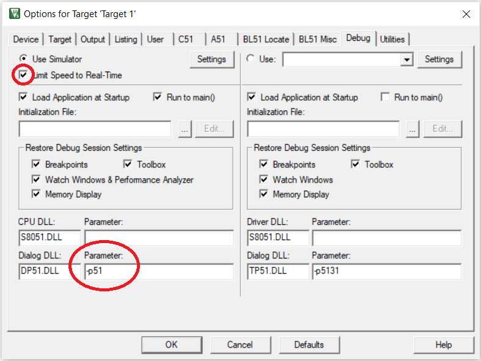

Keil µVision is an integrated development environment (IDE) for editing, compiling, running, and debugging programs for the 8051 microcontroller. It is integrated in the sense that the same environment is used to perform all these tasks. For loading programs into the 8051 microcontroller, we will need the FLIP tool.
An non-integrated workflow would be where different tools are used for different tasks. For example, Visual Studio Code could be used for editing the program and a command line compiler could be used to compile the program.
At a high-level description, the Keil IDE workflow is as follows:
Create a new project.
Specify the target device while creating the project.
Create a new source file in the project.
Build the project.
Fix any compilation errors and rebuild.
Once program compiles without errors, use the debugger to check correctness of execution.
See the slide deck and video in the following section for more detailed instructions.
To download the Keil IDE, you will need to register at https://www.keil.com/demo/eval/c51.htm
Linux users will need to install Keil using Wine.
On Ubuntu, install Wine by running the following command. Use the relevant package manager for other Linux distributions.
sudo apt install wine-stable
Run the following command in the folder where c51v960a.exe was downloaded.
wine c51v960a.exe
The following slide deck has an introduction to using the Keil µVision IDE. The pdf can be downloaded by
clicking here.
A video walk through of the features of Keil µVision IDE
The following slide deck has instructions on debugging programs with the Keil µVision IDE. The pdf can be
downloaded by clicking here.
If Keil µVision keeps crashing on pressing the Start\stop debug session,
then follow these steps.
Right click on the target folder (at the left pane).
Select
Options for Target `<TargetName>`.Select the
Debugpane.Change the
Parameterfield to the right ofDialog DLLwith textDP51.DLLto-p51.Tick the
Limit Speed to Real-Timecheckbox.
See the below screenshot.
